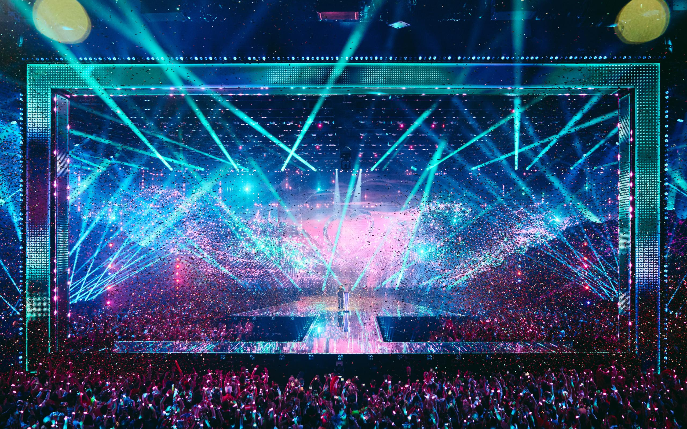

<div>Eurovision Song Contest 2026</div>


<div>About the Event</div>
<div>
  Experience the excitement of the Eurovision Song Contest, an annual
  celebration of music, diversity, and cultural spectacle. Join us for a night
  of unforgettable performances and international camaraderie.
</div>
<div>May 12, 2026</div>
<div>
  Wiener Stadthalle, Vienna, Austria<br />
  <a href="mailto:info@eurovision.com">info@eurovision.com</a>
</div>

<div>Lineup</div>
<div>🇦🇱 Alis - "Nân"</div>
<div>🇨🇾 Antigoni - "JALLA"</div>
<div>🇺🇦 LELÉKA - Ridnym</div>

<div>Register</div>
<div>Your Name:</div>
<input placeholder="E.g. Ramio Sorri" />
<div>Subscribe to Eurovision newsletter <input type="checkbox" /></div>
<button>Sign me up!</button>
